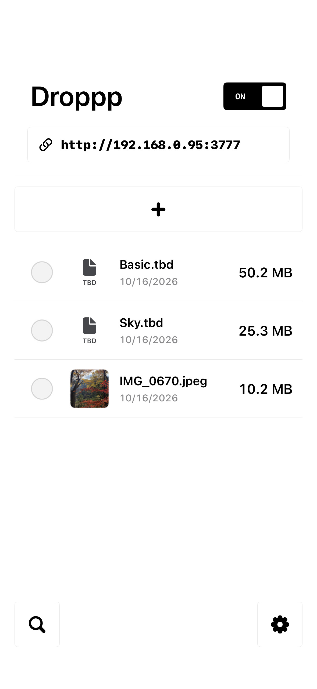

From desktop to pocket.
Send documents, screenshots, and archives from a Windows PC or Mac straight to Droppp.
LOCAL WI-FI FILE TRANSFER
From your browser to your iPhone.
And back again. Just a drop away.
Made for iPhone & iPad.

01 No account.
02 No cable.
03 No cloud upload.
01 / THE CONNECTION
Photos, videos, documents, ZIPs. Move them over the same Wi-Fi with a browser and Droppp. No desktop software to install.

Open Droppp and turn on the local server.
Open the app’s address in a browser on the same Wi-Fi.
Upload to your iPhone or download files back to your computer.
02 / INSIDE DROPPP
A direct file library, useful search, and a clear view of your activity. Familiar controls, without the clutter.
BRING IT ALL TOGETHER
Add from Photos or Files, create a folder, or make a text file. Keep what you need together in Droppp.
Explore the guide01 / 04

FIND YOUR NEXT FILE
Search the current folder and narrow the list by item type, extension, or size. Your files stay easy to reach.
Explore the guide02 / 04

A CLEARER PICTURE
See recent additions, downloads, and deletions. History brings your file activity and transfer insights into one place.
Explore the guide03 / 04

MAKE IT YOURS
Choose a light or dark appearance, set your language, and control automatic screen dimming from Settings.
Explore the guide04 / 04

03 / EVERYDAY TRANSFERS
For the work file on your PC, the photo on your phone, and everything you want to keep close.
Send documents, screenshots, and archives from a Windows PC or Mac straight to Droppp.
Connect from an Android device, tablet, or computer. Keep both devices on the same Wi-Fi.
Collect files locally, then share, move, or delete them whenever you’re ready.
LESS BETWEEN YOU AND YOUR FILES
Keep your files close. Keep things simple.